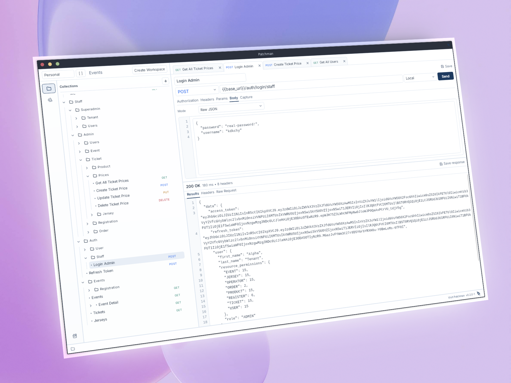

Workflow
Why local-first, Git-friendly API clients keep teams moving
API requests change for the same reasons code changes: new endpoints, renamed fields, different auth flows, and clearer examples. Keeping that work local, visible, and reviewable makes the team faster.

Many teams treat API client work as something separate from the repository. The app has its own workspace, the workspace has its own sharing model, and the code has to catch up later. That can work, but it adds a second place where important API knowledge quietly drifts.
API testing is usually part of a tight development loop. You change code, send a request, inspect the response, adjust the request, and try again. In that moment, speed and clarity matter more than a large workspace system.
A local-first workflow keeps the request context on your machine and near the project. That makes it easier to test private services, work against local development servers, and keep examples aligned with the code you are changing.
When request collections are stored as files, a changed endpoint can be reviewed like any other project change. A teammate can see that a path changed, a header was added, or a sample body was updated before the change becomes part of the shared workflow.
That review loop is especially useful for backend and frontend work. The API example can travel with the implementation, so the request used to test a feature is easier to find later.
Branches, pull requests, diffs, and history are already familiar to development teams. A Git-friendly API client does not need to replace that process. It can simply make API work fit inside it.
- Branches can carry request changes with code changes.
- Reviews can include endpoint examples and payload updates.
- History can show when a shared API example changed.
When a tool focuses on the core request flow, there is less to think about. You can open a workspace, choose a request, send it, inspect the result, and commit the request only when it is ready to be shared.
What's new in v0.2.0-alpha
This release focuses on making everyday API work easier to organize, preview, and continue from one request to the next.
- Workspace groups help separate personal and work API collections without adding cloud workspace overhead.
- The app preview is sharper, with the current request, environment, body mode, response area, and saved state easier to scan.
- JSON collection import is easier, so existing request sets can move into Patchman with less friction.
- Response data can be captured into environments, which helps reuse values from one request in the next step.
Patchman is built around this practical idea: open the app, send the request, inspect the response, and keep the request close to the project. The less the API workflow wanders away from the codebase, the easier it is for a team to understand what changed and why.